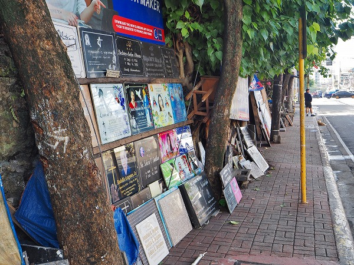
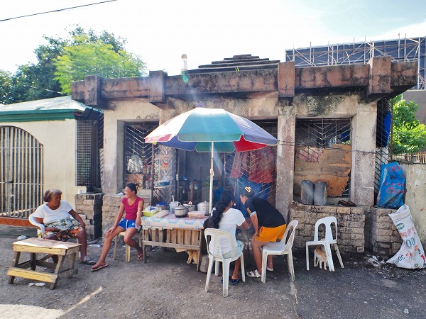

セブ島の旅は続く。
さぞかし日本人だらけかと思ったら日本人の姿は少なく観光客のほとんどが韓国人だった。
街は韓国料理屋だらけ。
コンビニに行っても売ってる酒はチャムシルばっかり。
ポン酒も頼みますよー。
・・・そんなセブ島だが、中心街のセブシティに観光客はまず訪れないチョット変わった場所がある。
それは市の中心部にあるキャレータ墓地。
巨大ショッピングモールであるアラヤセンターやＳＭシティからもほど近い好立地だ。
ここが変わっているのは墓地なのに人が住んでいる、という点。
一体どういうことなのか？墓地に家が建っているのか？
詳細を確かめにキャレータ墓地に向かった。
地図で見ると墓地はかなり広いようだ。面積は東京ドーム1個分。
墓地の前の大通りには市街地だけに交通量が多い。

そんな通りに面して石板がズラリと並んでいる。
見れば全て墓石だった。
お。バスケ界のスーパースターで２０２０年に事故死したコービー・ブライアントの墓石があるじゃないか！
・・・もちろんここにコービーが眠っている訳ではない。
いわゆるサンプル品だ。
ホラ、表札屋さんで「徳川家康」とか彫ってあるのあるじゃないですか？アレと一緒です。
ちなみにフィリピンで一番人気のあるスポーツはダントツでバスケットボールなのだ。
この辺、サッカー、特にプレミアリーグが人気の他の東南アジア諸国とは違ったアメリカナイズされた歴史を持つ国なんですねー。
もちろんキングオブポップ、マイケル・ジャクソンもいらっしゃいます。
そしてアジアを代表する有名人と言えばこの方、ブルース・リー。
ブルースとイエスのツーショットが眩しい。
私にしてみればブルース・リーの方が「神様」なんですけど。
こちらの神様はサントニーニョ。
特にセブではサントニーニョ信仰は非常に盛んである。
もちろんこれから「出荷」されるリアルな墓石もたくさんある。
故人+サントニーニョの写真とイエスとマリアのフォーショット。
墓石が並ぶストリートで新しい墓石を刻んでいる職人さんがいた。
作業を少し見学させてもらった。
で、いよいよ墓地の入口である。
入り口前はバス停になっており、ひっきりなしにローカルのバスやミニバスなどが発着している。
そして花やロウソクを売る店が並んでいる。
中に入ってみる。
あれ？お墓がない。
通りにはバイクが停まっており、ごくごく普通のセブっぽい街並みだ。
若干衛生状態は悪そうだが。
さらに進んでいくと人口密度は増えてくるが、お墓が見当たらない。
ただし、道の舗装は剝れ、水たまりが増えてきて道路がグチャグチャになって来た。
いわゆるスラムっぽい感じになってきたみたい。
さらに進むと段々生活感が濃密になって来る。
ああ、これがお墓なのかあ。
生活用品や洗濯物に埋もれて判らなかったよ・・・
あっ！そうか！
さっきの墓地の入口からここまで歩いてきて全然気付かなかったが、通りに面した建物、これ全部お墓だったのかー！
改めて見てみると、三角屋根の建物の中には遺体を納める龕のようなものがある。

その龕をベッドにしたりテーブルにして生活しているのだ。
あまりにもあっけらかんと生活しているのでお墓であることすら気付かなかったぞ。
何故このような現象が起こっているのか？
・・・それはこの国の悲しい現実と密接に関わっているのだ。
この国の貧富の差は激しい。
ビーチリゾートでくつろぐ外国人や富裕層がいる一方で最貧困層の人々は住む家すらままならない。
そこで家のない人々は墓地にある家形の墓に住むことになる。
これは不法占拠ではなく、墓の持ち主も容認しているようだ。
住まわせてもらっている代わりに墓参りの時は墓を掃除しておく決まりになっている、という。
しかし見たところどう考えても片付けられないだろ、という状況の墓などもあり、実際のところどうなっているのか良く判らない。
この日は天気が良かったのであちこちで洗濯物が干されていた。
ちなみにこの墓地の住居は人口密度が高いので、日中歩いていてもさほど危険な感じはない。
（あくまでも個人の感想です。地元の人などは危険なので絶対に行かないように！と言っていることをお含みおきくださいませ）
夜は犯罪者や麻薬組織も跋扈しているようなので相当デンジャラスなようだ。
延々と続く墓。
全ての墓に人が住んでいるわけではない。
入口の近くは結構な確率で住居に転用されていたが、奥の方になると住んでいる人もまばらだ。
やはり治安の事を考えたらポツンと離れたところに住むのは危険なんだろう。
あと入口の方は電線から（違法か合法かは知らないが）分電して電気を引っ張ってきている家が多かったが、奥の方は電線が来ていないので電気ナシの生活をしていると思われる。
さらに墓地の中を飲料水のタンクを卸している水屋が巡回しているのが印象的だった
この墓地の住民の多くはロウソクを作って売っているという。
墓参に訪れた人々が捧げたロウソクの燃えカスを集めて固めて再利用している。
現在この墓地では様々な団体が住民の生活を助けるべく活動している。
特に子供の教育環境は深刻で、学校に行けない子供を集めて私設スクールを開いたりしているのだ。
家形の墓が並ぶエリアを過ぎるとロッカー型の集合墓地が並ぶ。
こちらの墓地の方がセブ島では一般的なようだ。
先程、道で見かけた平板状の墓石はここの蓋として使用されているのだ。
家形の墓はロッカー式墓地の数倍の大きさを使っている。
つまりそれだけ裕福な人が入手しているのだろう。
棺一個分のスペースしか手に入れられない人。
その何倍ものスペースを確保できる人。
住む家さえなく、その墓に住んでいる人・・・
フィリピン社会を象徴する光景だった。
ただ、死者と共に生きる人たちの表情は決して暗いばかりではなかった。
そこに暮らす子供たちの屈託のない笑顔には何か救われましたよ。